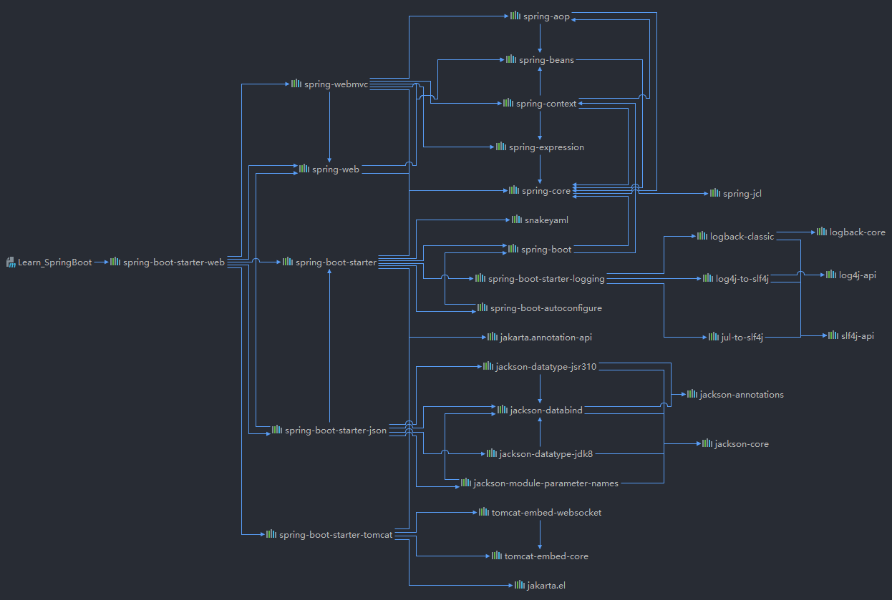

Spring Boot是一个构建在Spring框架顶部的项目。它提供了一种简便，快捷的方式来设置，配置和运行基于Web的简单应用程序。它是一个Spring模块，提供了RAD(快速应用程序开发)功能。它可以用于快速创建独立的基于Spring的应用程序，因为它需要最少的Spring配置就可以运行。简而言之，Spring Boot是Spring Framework和嵌入式服务器的组合。在Spring Boot不需要XML配置(部署描述符)。它使用约定优于配置的软件设计范例，这意味着可以减少开发人员的工作量。
SpringBoot简介
SpringBoot能做什么
我们应该使用Spring Boot Framework，因为:
- Spring Boot中使用了依赖项注入方法。
- 它包含强大的数据库事务管理功能。
- 它简化了与其他Java框架(如JPA/Hibernate ORM，Struts等)的集成。
- 它减少了应用程序的成本和开发时间。
与Spring Boot框架一起，其他许多Spring姐妹项目也有助于构建满足现代业务需求的应用程序。
Spring姐妹项目如下:
- Spring Data: 它简化了来自关系数据库和 NoSQL 数据库的数据访问。
- Spring Batch: 它提供了强大的批处理处理。
- Spring Security: 这是一个安全框架，可为应用程序提供强大的安全性。
- Spring Social: 它支持与LinkedIn等社交网络集成。
- Spring Integration: 它是企业集成模式的实现。使用轻量级消息传递和声明性适配器，它有助于与其他企业应用程序集成。
SpringBoot优缺点
优点：
Create stand-alone Spring applications
- 创建独立Spring应用
Embed Tomcat, Jetty or Undertow directly (no need to deploy WAR files)
- 内嵌web服务器
Provide opinionated ‘starter’ dependencies to simplify your build configuration
- 自动starter依赖，简化构建配置
Automatically configure Spring and 3rd party libraries whenever possible
- 自动配置Spring以及第三方功能
Provide production-ready features such as metrics, health checks, and externalized configuration
- 提供生产级别的监控、健康检查及外部化配置
Absolutely no code generation and no requirement for XML configuration
- 无代码生成、无需编写XML
SpringBoot是整合Spring技术栈的一站式框架
SpringBoot是简化Spring技术栈的快速开发脚手架
缺点：
- 迭代快，需要时刻关注变化
- 封装太深，内部原理复杂，不容易精通
第一个Hello world程序
pom.xml配置：
1 |
|
主程序ApplicationMain：
1 | package com.heavytiger.boot; |
业务层HelloController：
1 | package com.heavytiger.boot; |
直接运行MainApplication中的main方法即可启动，原因是springboot封装了tomcat服务器
创建application.properties简化全局配置：
1 | =8088 |
修改端口后，通过8088可以访问：
简化部署流程：
在pom.xml中添加如下插件依赖，可以打包成jar包
1 |
|
执行mvn package命令后，得到jar包，在shell下可以直接使用语句java -jar abc.jar运行jar包，启动web服务。
若命令行下启动时卡死，需要禁用cmd的快速编辑模式，之后即可正常运行jar包
SpringBoot自动装配原理
SpringBoot的特点
SpringBoot的依赖管理
我们上一章编写的hello world服务中，pom.xml下非常整洁，只导入了一个依赖，就能直接运行相应的功能，但是以往在Spring和SpringMVC中，要导入很多东西。SpringBoot简化的原理是：父项目做依赖管理
1 | <!--父项目做依赖管理，此时已经选择了版本号，因此在后续dependency导入依赖时，不需要另赋版本号--> |
SpringBoot无需关注版本号，自动实现版本仲裁：
- 引入依赖默认可以不写版本
- 引入非版本仲裁的jar包，即SpringBoot未声明的依赖，需要写版本号
在spring-boot-dependencies文件中，引入的mysql驱动是8.0.21版本，若想将其人为设置成5.1.43版本，则可以在properties标签下声明：
1 | <!--1、查看spring-boot-dependencies里面规定当前依赖的版本所用的key。--> |
Maven提供的特性，就近优先原则
SpringBoot导入starter场景启动器
1 | <!-- |
spring-boot-starter-web的依赖树，可以看到常见的web开发中的依赖均已经被导入，非常简洁明了

自动配置
SpringBoot帮忙做好的事情：
自动配置好Tomcat
- 引入Tomcat依赖
- 配置Tomcat
1
2
3
4
5
6<dependency>
<groupId>org.springframework.boot</groupId>
<artifactId>spring-boot-starter-tomcat</artifactId>
<version>2.3.4.RELEASE</version>
<scope>compile</scope>
</dependency>
自动配好SpringMVC
- 引入SpringMVC全套组件
- 自动配好SpringMVC常用组件（功能）视图解析器，dispatcherServlet等
自动配好Web常见功能
- SpringBoot帮我们配置好了所有web开发的常见场景及问题，如：字符编码乱码问题
默认的包结构
- 主程序所在包及其下面的所有子包里面的组件都会被默认扫描进来
- 无需以前的包扫描配置
- 想要改变扫描路径，
@SpringBootApplication(scanBasePackages="com.heavytiger")
- 想要改变扫描路径，
- 或者使用
@ComponentScan指定扫描路径，已经写了@SpringBootApplication()后，不能重复使用，因为其本质使用@ComponentScan实现，默认扫描到该注解的包下
- 或者使用
```java
@SpringBootApplication
// 等同于以下三句
@SpringBootConfiguration
@EnableAutoConfiguration
@ComponentScan(“com.heavytiger.boot”)1
2
3
4
5
6
7
8
9
10
11
12
13
14
15
16
17
18
19
20
21
22
23
24
25
26
27
28
29
30
31
32
33
34
35
36
37
38
39
40
41
42
43
44
45
46
47
48
49
50
51
52
53
54
55
56
57
58
59
60
61
62
63
64
65
66
67
68
69
70
71
72
73
74
75
76
77
78
79
80
81
82
83
84
85
86
87
88
89
90
91
92
93
94
95
96
97
98
99
100
101
102
103
104
- 各种配置拥有默认值
- - 默认配置最终都是映射到某个类上，如：`MultipartProperties`
- 配置文件的值最终会绑定某个类上，这个类会在容器中被创建对象
- 按需加载所有自动配置项
- - 非常多的starter
- **按需加载，引入了哪些场景，该场景的自动配置才会被开启，不一定类都被加载，只有需要的时候才会被加载**
- - SpringBoot所有的自动配置功能都在`spring-boot-autoconfigure`包里面
- ......
### 容器功能
#### 组件添加
##### @Configuration
* 基本模式`@Configuration`，表示该类是一个配置类
* Full模式`@Configuration(proxyBeanMethods = true)`和Lite模式`@Configuration(proxyBeanMethods = false)`
建议使用方案：
* 配置类中，组件之间没有依赖关系，使用Lite模式加速容器的启动，否则每次获取实例都需要判断是否存在实例
* 配置类中，组件之间存在依赖关系，方法调用必须要得到之前的单实例组件，此时应该用Full模式保证获取到的是同一实例
```java
// ########################################Configuration使用示例######################################
/**
* 1、配置类里面使用@Bean标注在方法上给容器注册组件，默认也是单实例的
* 2、配置类本身也是一个组件，可以获取组件后调用其中的方法
* 3、proxyBeanMethods：代理bean的方法
* Full(proxyBeanMethods = true)、【保证每个@Bean方法被调用多少次返回的组件都是单实例的】
* Lite(proxyBeanMethods = false)【每个@Bean方法被调用多少次返回的组件都是新创建的】
* 组件依赖必须使用Full模式，其他今年使用Lite模式
* Spring 5.2版本后支持
*/
@Configuration(proxyBeanMethods = false) //告诉SpringBoot这是一个配置类 == 配置文件
public class MyConfig {
/**
* Full:外部无论对配置类中的这个组件注册方法调用多少次获取的都是之前注册容器中的单实例对象
* @return
*/
@Bean //给容器中添加组件。以方法名作为组件的id。返回类型就是组件类型。返回的值，就是组件在容器中的实例
public User user01(){
User zhangsan = new User("zhangsan", 18);
//user组件依赖了Pet组件
zhangsan.setPet(tomcatPet());
return zhangsan;
}
@Bean("tom")
public Pet tomcatPet(){
return new Pet("tomcat");
}
}
// ###################################@Configuration测试代码如下########################################
@SpringBootConfiguration
@EnableAutoConfiguration
@ComponentScan("com.heavytiger.boot")
public class MainApplication {
public static void main(String[] args) {
//1、返回IOC容器
ConfigurableApplicationContext run = SpringApplication.run(MainApplication.class, args);
//2、查看容器里面的组件
String[] names = run.getBeanDefinitionNames();
for (String name : names) {
System.out.println(name);
}
//3、从容器中获取组件
Pet tom01 = run.getBean("tom", Pet.class);
Pet tom02 = run.getBean("tom", Pet.class);
System.out.println("组件："+(tom01 == tom02));
// 4、com.heavytiger.boot.config.MyConfig$$EnhancerBySpringCGLIB$$51f1e1ca@1654a892
MyConfig bean = run.getBean(MyConfig.class);
System.out.println(bean);
// 如果@Configuration(proxyBeanMethods = true)代理对象调用方法。
// SpringBoot总会检查这个组件是否在容器中已经存在实例
// 这样能够保持组件单实例
User user = bean.user01();
User user1 = bean.user01();
System.out.println(user == user1);
User user01 = run.getBean("user01", User.class);
Pet tom = run.getBean("tom", Pet.class);
System.out.println("用户的宠物："+(user01.getPet() == tom));
}
}
@Bean、@Component、@Controller、@Service、@Repository
和之前的SSM中一样，在类上标注注解，可以直接通过名称获取，也可以实现自动装配
@ComponentScan、@Import
1 | /** |
@Conditional
条件装配：满足Conditional指定的条件，则进行组件注入
1 | =====================测试条件装配========================== |
xml配置文件引入
使用@ImportResource注解，可以把原生的配置文件导入到容器中，适用于公司中存在较老的不方便进行迁移的组件
1 | <!--======================beans.xml=========================--> |
1 |
|
配置绑定
使用Java读取properties配置文件中的内容，并把它封装到JavaBean中，以供随时使用
例如：
1 | # application.properties |
方案一：@Component + @ConfigurationProperties
1 | /** |
方案二：@EnableConfigurationProperties + @ConfigurationProperties
若使用第三方的组件，不可能去给类上添加一个@Component，因此只能在需要使用到组件的配置类上添加@EnableConfigurationProperties
1 |
|
自动配置原理入门
引导加载自动配置类
1 |
|
从@SpringBootConfiguration中开始查询实现：
1.@SpringBootConfiguration
里面的注解有@Configuration代表当前是一个配置类
2.@ComponentScan
指定扫描哪些内容，哪些包
3.@EnableAutoConfiguration
1 |
|
4.@AutoConfigurationPackage
自动配置包，指定了默认的包的规则
1 | //给容器中导入一个组件 |
5.@Import(AutoConfigurationImportSelector.class)
1、利用
getAutoConfigurationEntry(annotationMetadata);给容器中批量导入一些组件
2、调用List<String> configurations = getCandidateConfigurations(annotationMetadata, attributes)获取到所有需要导入到容器中的配置类
3、利用工厂加载Map<String, List<String>> loadSpringFactories(@Nullable ClassLoader classLoader)；得到所有的组件
4、从META-INF/spring.factories位置来加载一个文件。
默认扫描我们当前系统里面所有META-INF/spring.factories位置的文件
spring-boot-autoconfigure-2.3.4.RELEASE.jar包里面也有META-INF/spring.factories
按需开启自动配置项
虽然一共有127个场景在自动配置启动的时候会被默认全部加载，但是由于各个场景的
xxxAutoConfiguration会按照条件装配规则(@Conditional)，最终实现按需分配
修改默认设置
1 |
|
SpringBoot默认会在底层配好所有的组件。但是如果用户自己配置了以用户的优先
1 |
|
总结：
SpringBoot先加载所有的自动配置类 xxxxxAutoConfiguration
每个自动配置类按照条件进行生效，默认都会绑定配置文件指定的值。xxxxProperties里面拿。xxxProperties和配置文件进行了绑定
生效的配置类就会给容器中装配很多组件
只要容器中有这些组件，相当于这些功能就有了
定制化配置
- 用户直接自己@Bean替换底层的组件
- 用户去看这个组件是获取的配置文件什么值就去修改。
xxxxxAutoConfiguration —> 组件 —> xxxxProperties里面拿值 —-> application.properties
最佳实现
引入场景依赖
查看自动配置了哪些（选做）
- 自己分析，引入场景对应的自动配置一般都生效了
- 配置文件中设置
debug=true开启自动配置报告。Negative（不生效）\Positive（生效）
是否需要修改
- 参照文档修改配置项
- 自定义加入或者替换组件
- @Bean、@Component
- 自定义器 XXXXXCustomizer；
- ……
参考资料
[1] 尚硅谷雷神SpringBoot2零基础入门springboot全套完整版（spring boot2）_哔哩哔哩_bilibili